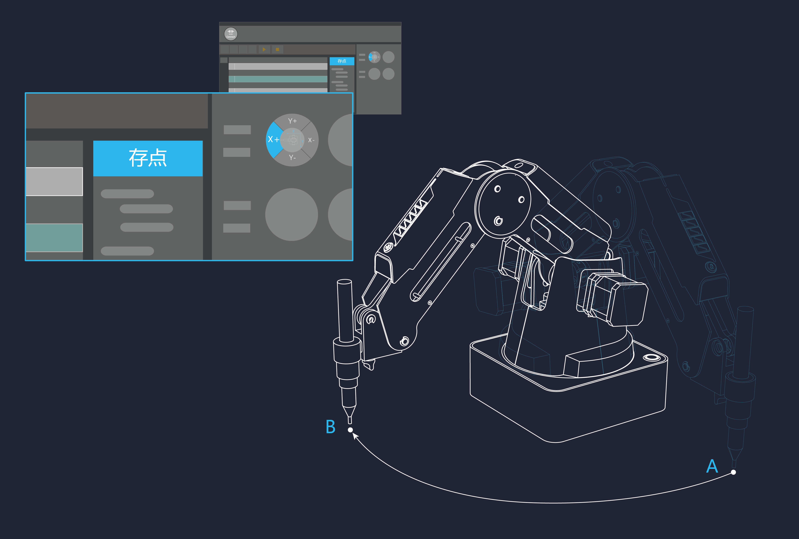

简体中文
简体中文
English
步骤一:插入USB电缆,并点击Dobot Studio的连接,然后你就可以通过studio操作机械臂了
步骤二:您可以通过Dobot Studio控制圆盘控制机械臂到你想要的位置，并点击存点保存这个目标位置

步骤三:当然你也还可以通过按住小臂的解锁按钮，拖动机械臂到目标位置，松开按钮后会自动记录一个点
步骤四:当你想操作的点都设置好之后，点击开始回放按键，机械臂移动您设置的点
步骤五:也许这些功能以及不能满足你的好奇心了,您可以打开高级模式，实现更多功能,详细设置参考帮助
以后不再显示此向导